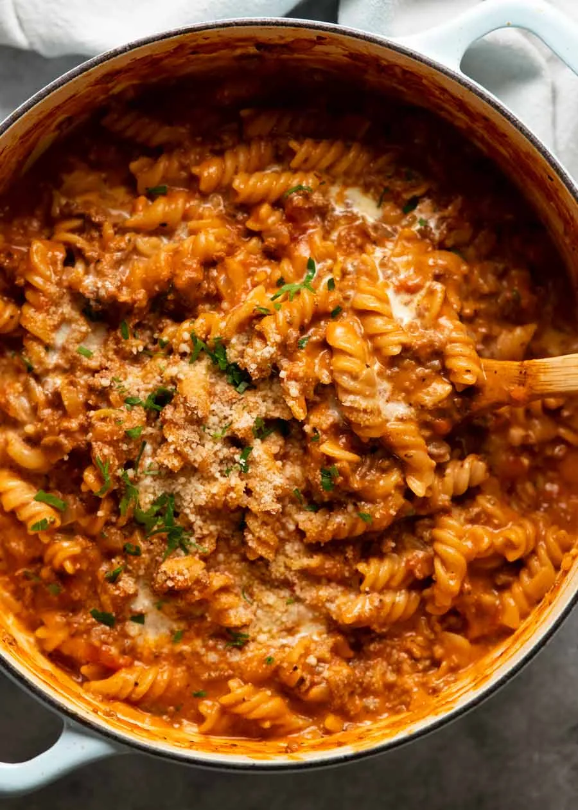

Pasta Recipe

Original Pasta Recipe
Description
A quick and easy creamy tomato pasta made from scratch in 30 minutes.
Ingredients
- 350g fusilli, penne pasta
- 500g ground beef
- 1 1/2 Tbsp olive oil
- 2 garlic cloves
- 1 onion
- 2 Tbsp tomato paste
- 400g can crushed tomatoes
- 1 1/2 tsp salt
- 1/2 tsp black pepper
- 1L chicken stock
- 3/4 cups thickened/heavy cream
- 2 tsp italian herbs
- Parmesan cheese
- Parsley
Steps
- Sauté - Heat the oil on high heat in a large heavy-based pot. Cook garlic and onion for 1 1/2 minutes.
- Cook beef & seasonings - Add beef and cook, breaking it up as you go, until you can no longer see red meat. Add the Italian herbs and cook for 30 seconds, then add tomato paste and cook for 1 minute to cook out the raw flavour.
- All in - Add crushed tomato, chicken stock, salt, pepper and red pepper flakes, if using. Stir, then add the pasta.
- Cook 15 min - Bring the liquid to a simmer, then cook for 15 minutes, stirring every couple of minutes then more frequently towards the end (ensure pasta doesn't stick to base) until the pasta is just about cooked.
- Creamy - Add cream, then simmer for a further 1 to 2 minutes. It will still be quite saucy - this is what you want! Pasta absorbs liquid quickly, so it will still be nice and oozy when you start eating.
- Serve - Remove from the stove. Give it a good stir then ladle into bowls. Serve with parmesan and parsley.
Back